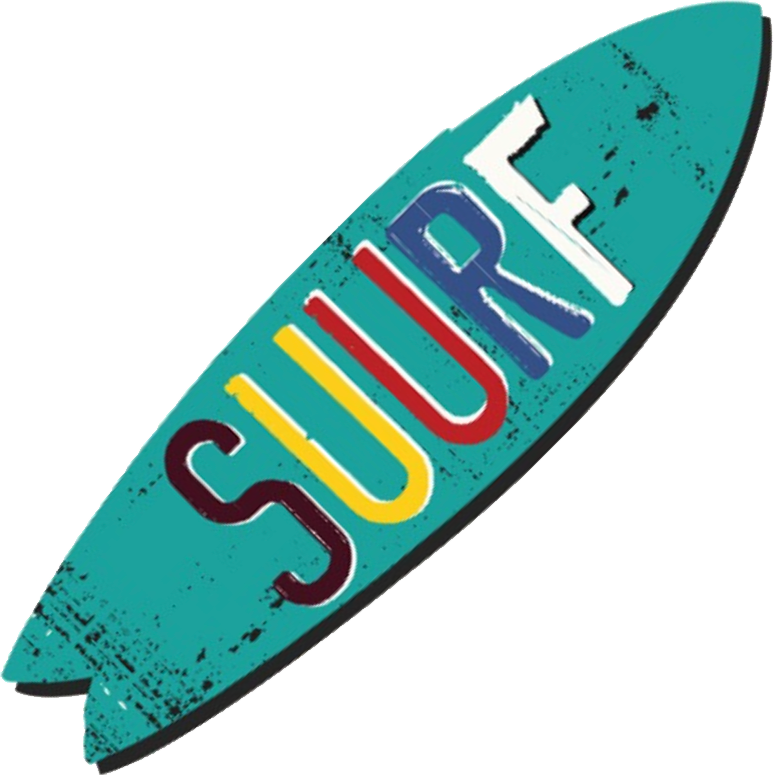

Blog
OUUC 2024 Summer UU Reading Fun Event - Newsy Bits & Shopping Tips #1
Posted by Susan, OUUC book sale volunteer on April 11th 2024
Greetings fellow book lovers,
We now have dates for both of OUUC's community book sales − so please mark your calendars, bring on the book donations, and help spread the word!
-
2024 SUURF: OUUC's Summer UU Reading Fun online bookstore will be OPEN for Olympia-area shoppers from 7am Tuesday JUNE 11 thru 10pm Sunday JUNE 16 at www.books-ouuc.com.
While the virtual bookstore is open, you can shop and pay online, then pick up your combined purchases at OUUC the following week. This year, we also hope to offer a delivery service option if the OUUC pickup times are not convenient for you. The flat $10 charge will include all your purchases. Delivery is only available for shoppers with an Olympia-Lacey-Tumwater address and a dry spot for our volunteers to deliver your books. - 2024 BBB: OUUC's Books Brownies & Beans HUGE in-person book sale event will open at 9am on Saturday, October 26 at OUUC, 2306 East End St NW, Olympia, WA 98502. Come and browse the amazing collection of books while you enjoy live music, homemade brownies, and delicious coffee.
- Donate Books! Donations of gently used books, audiobooks, CDs and DVDs for OUUC's community book sales are welcome and gratefully accepted during any daylight hours at the covered center section of Susan Dodson's front deck in Olympia, WA. Susan's address is in the OUUC directory, or you can email Susan at books.ouuc@gmail.com for more information. If you need help boxing up or transporting your donations, please let us know. Also, please do not deliver book donations to the OUUC building at this time (OUUC delivery is limited to the weeks immediately before the BBB sale, from mid-September to mid-October).
- Spread the word! Please forward this email to your Olympia-area friends who may be interested in shopping the sales and/or donating books − or signing up to receive OUUC book sale updates, by emailing Susan at books.ouuc@gmail.com.
We hope to see you at SUURF and BBB,
Susan Dodson, OUUC book sale volunteer